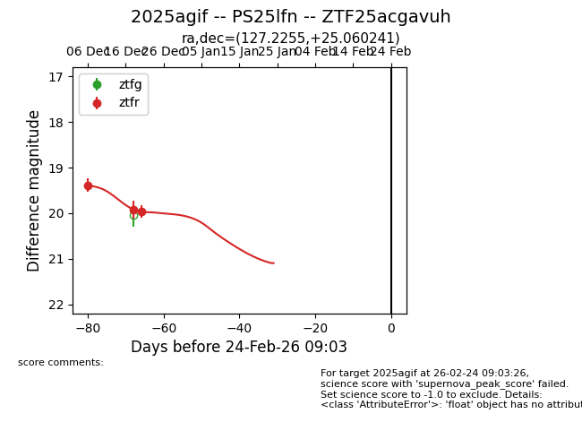
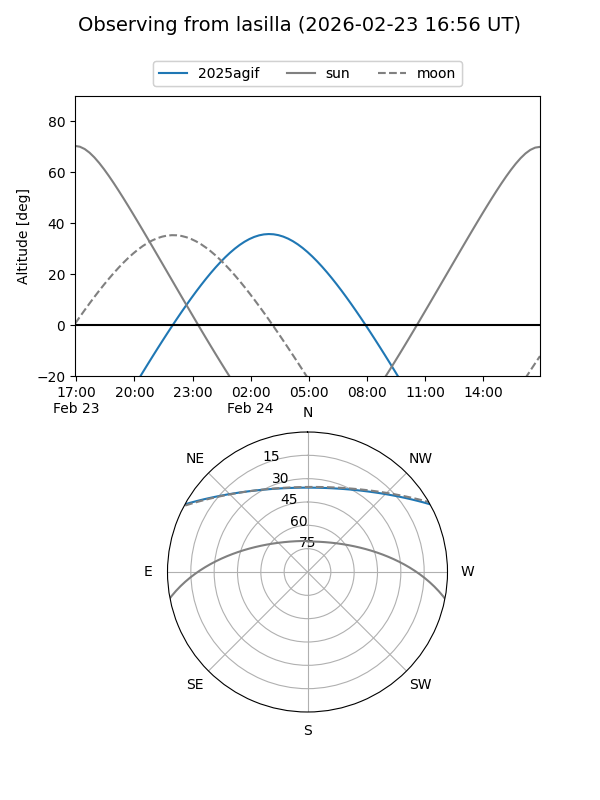
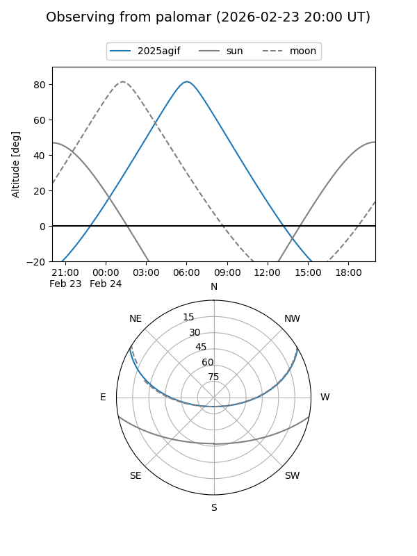
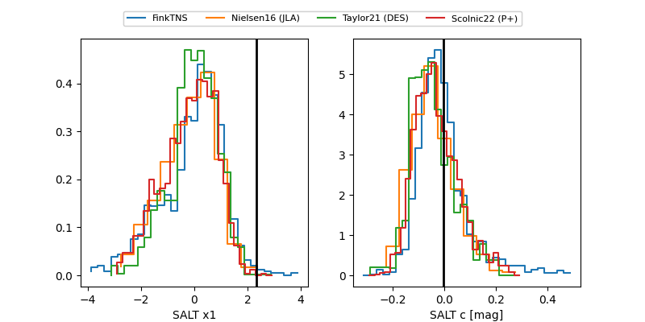

2025agif
Target 2025agif at 2025-12-30 19:03
Aliases and brokers:
FINK: fink-portal.org/ZTF25acgavuh
Lasair: lasair-ztf.lsst.ac.uk/objects/ZTF25acgavuh
ALeRCE: alerce.online/object/ZTF25acgavuh
TNS: wis-tns.org/object/2025agif
YSE: ziggy.ucolick.org/yse/transient_detail/2025agif
alt names
ZTF25acgavuh (ztf,fink_ztf)
2025agif (tns,yse)
Coordinates:
equatorial (ra, dec) = 127.2255,+25.06024
equatorial (HMS+DMS) = 08:28:54.12,+25:03:36.87
galactic (l, b) = (198.8783,+31.71902)
Flags:
Photometry:
last ztfr=19.97
3 ztfr detections
Lightcurve

Visibility


Additional plots
